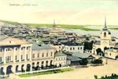
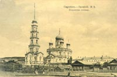
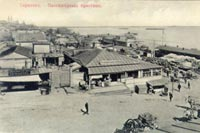
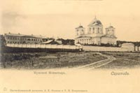
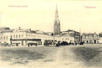
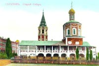

История Саратова
Начать рассказ о себе со слов: «Я родился в Саратове» - могли бы мастер живописи В. Борисов-Мусатов, изобретатели гусеничного и колесного тракторов Ф. Блинов и Я. Мамин, лауреат Нобелевской премии академик Н. Семенов, народные артисты СССР Б. Бабочкин, Б. Андреев, Е. Лебедев, С. Филиппов, О. Табаков, О. Янковский...
В Саратове, в индустриальном техникуме, учился (и с отличием его закончил) Ю. Гагарин.
Автор всемирно известной песни «Калинка» - саратовский музыкант И.Ларионов.
Именно Саратов стал родиной одного из самых знаменитых героев гоголевских произведений, Ивана Александровича Хлестакова.
|
 |
 |
Приволжская часть современного Заводского района Саратова называется Увек. На этом месте находился третий по величине город Золотой Орды - с дворцами, монетным двором, водоснабжающей сетью. По одной исторической версии, Увек был разрушен Тимуром в войне с Токтамышем в 1395 году, по другой - основная часть города при береговых оползнях сошла в Волгу. Есть надежда, что река хранит исторические сокровища - на дне под слоем ила и песка. Крепость Саратов заложили летом 1590 года князь Григорий Осипович Засекин и стрелецкий Голова Фёдор Михайлович Туров. Первый был опытным «градодельцем»: в 1586-м построил Самару, в 1589-м - Царицын (Волгоград).
В первой половине XVII в. Саратов - довольно большая крепость на Волге, где постоянно находилось от 300 до 400 стрельцов. Стоял город на мысу, образуемом речками Саратовкой и Воложкой (рядом с сегодняшним городом Энгельсом).
Весной 1674 года во исполнение указа царя Алексея Михайловича: «Саратов город делать на горах новый» крепость была перенесена на правый берег. Полковник Александр Шель выбрал место на юге от Соколовой горы, там, где стоял «рыбный городок» московского Новоспасского монастыря. Саратов развивался. Все большее значение приобретало посадское население, занимавшееся рыболовецким промыслом, торговлей хлебом и солью.
В июне 1722 года по пути в Персию в Саратове побывал Пётр I.
Академик И. Лепёхин, посетивший город в 1769 году, назвал его одним из лучших в провинции - с прямыми улицами и хорошими торговыми рядами.
Ширятся соляная, мануфактурная, рыбная, хлебная торговли. Появляются «кирпичные сараи», «пеньковые амбары», гончарные заводы. Названия улиц свидетельствовали о занятиях жителей: Соляная, Кузнечная, Тулупная, Кирпичная. Улицы Сакко и Ванцетти и Пушкина именовались в прошлом Большой и Малой Кострижными (от «кострика» - отходы льна и конопли). Фабрика француза Вердье производила атлас, чулки, тафту - тонкую шелковую ткань.
6 августа 1774 года к Саратову подошли основные силы войска Емельяна Пугачёва. А.Пушкин в «Истории Пугачёва» отмечал: «В это время Пугачёв занял Соколовую гору, господствующую над Саратовом, поставил батарею и начал по городу стрелять». Благодаря манифесту Екатерины Второй от 1763 года долгое время Саратов был «центром притяжения» поволжских немцев.
В первые годы XIX в. возникла загородная слобода - Немецкая. По плану 1812 года немецким колонистам было отведено место в первом квартале от улицы Никольской (Радищева). Вскоре появилась Немецкая улица (ныне проспект Кирова).
В начале 20-го века поволжских немцев насчитывалось около 800 тысяч человек. Во время Великой Отечественной войны многие из них были переселены в Сибирь или Казахстан (некоторые впоследствии вернулись назад). Начиная с 80-х годов 20-го века большинство эмигрировало в Германию.
В 1781 году был учрежден герб Саратова: на голубом поле геральдического щита встретились, плывя навстречу друг другу, три стерляди серебряного цвета. Здесь нашли образное отражение рыбные и водные богатства края.
|
 |
 |
Из захудалого местечка, вконец опустевшего после набега Пугачёва, Саратов быстро превратился в богатый купеческий город. По мере роста Саратова его центр передвигался от Волги к юго-западу. «Саратовские торговые люди захватывали своими домами, лавками и магазинами местность по направлению Московской улицы до Александровской (Горького) и даже до Вольской», - свидетельствовал юрист И. Славин, сам из «купецкого сословия».
«По правую сторону от коммерческого Саратова (если стоять лицом к Волге), за Ново-Соборной площадью по направлению к Ильинской и Митрофановской (Кирова) площадям, представлявшим в первой половине XIX в. пустынную окраину, была расположена часть города, имевшая колорит, совершенно отличный от старого Саратова. Это - Сен-Жермен города. Здесь по Константиновской, Александровской, Аничковской, Дворянской и другим улицам проживало по преимуществу «благородное» сословие, чуждое всяким шумным и хлопотливым торжищам и базарной суете. Здесь обитало дворянство и чиновничество, аристократия, свысока взиравшая на изнывающего в коммерческих хлопотах купца». Многие купцы занимались благотворительностью, меценатством, как говорится, не за страх, а за совесть, думая о преобразовании города, об улучшении жизни сограждан. Николай Сергеевич Азаров, например, в 1869 году устроил при мужской гимназии церковь во имя святых Кирилла и Мефодия, домовую церковь в женском пансионе. По завещанию деньги почетного мирового судьи по Саратовскому уезду, гласного городской думы Ивана Александровича Поздеева пошли на открытие детской больницы «на горах» на Соколовой улице. На Московской, 9 сохранился дом купца Дмитрия Вакурова - первого книжного торговца в Саратове. В гости к нему часто заходил Афанасий Столыпин, прославленный артиллерийский офицер, участник Бородинской битвы, двоюродный дед поэта Михаила Лермонтова. Коль скоро мы упомянули фамилию Столыпин, скажем о другом ее представителе - председателе Совета министров. П.А. Столыпин (1862-1911) в 1903 году назначается начальником Саратовской губернии.
В марте новый губернатор принимал гласных городской думы в своей резиденции (Московская, 31). Вскоре после вступления в должность под квартиру губернатора приспособили дом № 22 по улице Вольской. Рядом выстроили трехэтажное здание для его канцелярии и «присутствий». В апреле 1906 года 44-летний Столыпин был назначен министром внутренних дел.
Последний раз он побывал в Саратове в должности премьер-министра в сентябре 1910 года. По заказу городской думы Илья Репин создал в этом же году портрет Петра Столыпина, который находится сейчас в экспозиции художественного музея им. А.Н. Радищева.
В Саратовском областном музее краеведения можно увидеть мундир реформатора России, семейный альбом с уникальными фотографиями, кресло из Киевского театра, на которое опустился смертельно раненный Столыпин. В 2002 году в Саратове был открыт первый в России памятник Петру Аркадьевичу Столыпину.
|
 |
 |
Но продолжим наш рассказ в хроникальном порядке. До начала 1800-х гг. в городе открылись Главное Народное училище, типография губернского правления, первый крепостной театр. В 1826 г. по проекту архитектора В.П. Стасова сооружен Александро-Невский кафедральный собор - в честь победы над армией Наполеона (был разрушен в 30-е гг. нашего века).
В 1885 году в Саратове была открыта первая общедоступная художественная галерея, названная в честь А.Н. Радищева и открытая по инициативе внука великого деятеля. В первую коллекцию вошли работы художников А. Боголюбова, И. Шишкина, Ф. Васильева, И. Крамского, И. Репина, К. Коро, Ш. Добиньи и других. Свой материальный вклад в создание галереи также внесли С. и. П. Третьяковы, А. Бахрушин, П. Виардо. Впоследствии галерея обрела статус первого общедоступного музея России.
В 1873 году в Саратове был основан первый русский национальный стационарный цирк братьев Никитиных, уроженцев и жителей Саратовской губернии.
В 1912-м появилась третья в России консерватория, в 1909 году - десятый университет, в 1918-м – первый детский театр.
Город Саратов стал родиной многих русских знаменитостей. Здесь родились публицист, писатель и литературный критик Н.Г. Чернышевский, художник В.Э. Борисов-Мусатов, Герой Советского Союза генерал И.В. Панфилов (участвовал в боях под Москвой, погиб на поле боя под Волоколамском), лауреат Нобелевской премии академик Николай Семенов (единственный советский лауреат Нобелевской премии по химии; получил ее за разработку теории цепных реакций), народные артисты Б. Бабочкин, Е. Лебедев, С. Филиппов, О. Табаков, О. Янковский, автор всемирно известной песни «Калинка» саратовский музыкант И. Ларионов.
Саратов - в биографиях гениального биолога Николая Вавилова, художника Михаила Врубеля, авиаконструктора Олега Антонова, писателя Михаила Булгакова, архитектора Фёдора Шехтеля, химика Николая Зинина, поэта Гаврилы Державина, академика Гурия Марчука, писателя Льва Кассиля, конструктора космической радиотелефонной связи Юрия Быкова... Назовем наиболее важные события до начала 1900-х годов: первый пароход подошел к саратовской пристани (1838 г.), стала выпускаться первая газета «Саратовские губернские ведомости» (1844 г.), родился П.Н. Яблочков - ученый-электротехник, изобретатель «русского света» (1847 г.), построен действующий и поныне собор Сошествия Святого Духа (1855 г.), открыт Городской Общественный Банк (1863 г.), родился художник В. Борисов-Мусатов (1870 г.), родился И. Панфилов - Герой Советского Союза, прославленный генерал (1893 г.), впервые на улицах Саратова появился автомобиль (1900 г.)... На волжском берегу, недалеко от места основания правобережного Саратова, особенно остро ощущается связь прошлого, настоящего и будущего. Здесь, на Музейной площади, находится памятник зодчества - Свято-Троицкий собор, построенный в конце XVII - начале XVIII века. Рядом с Соколовой горой, хранящей память о Петре I и Е. Пугачёве, расположен аэропорт, с которого взмывают в небо самолеты «ЯК», рожденные в Саратове. К основным достопримечательностям города относится мемориальный комплекс «Парк Победы» на Соколовой горе (самой высокой точке Саратова), в который входят музей военной техники под открытым небом, памятник погибшим во время Великой Отечественной войны воинам-саратовцам «Журавли», памятник малолетним узникам фашистских концлагерей, музей «Национальная Деревня» под открытым небом. Кроме того, следует отметить Свято-Троицкий собор на Музейной площади, храм иконы Божией Матери «Утоли моя печали» (копия московского храма Василия Блаженного), здание Саратовской государственной консерватории им. Л.В. Собинова, парк Липки и, конечно, Увек – остатки древнего города, крупного центра Золотой Орды. На пересечении важнейших улиц города стоят площади: Театральная, Соборная, им. Кирова. Проспект Кирова является самой значительной и самой красивой достопримечательностью Саратова. На нём издавна расположены множество объектов культуры и торговли. Улица Советская считается одной из самых престижных в городе. Она начинается от ул. Радищева и тянется до ул. Астраханской. На Советской улице находятся множество культурных памятников. Например, дом вице-губернатора В. П. Александровского, сейчас это – городской противотурберкулезный диспансер, дом судебного деятеля А. Н. Вольского, здание Крестьянского и Дворянского поземельных банков и др. К этой улице примыкает Детский парк, на месте которого был знаменитый Княже-Владимирский собор. Одним из старейших краеведческих музеев России является Саратовский областной музей краеведения – он был основан в 1886 году. Особо ценными коллекциями музея считаются коллекции этнографической одежды, предметов быта и труда народов Поволжья, археологическая коллекция, коллекция холодного оружия, коллекция культовых предметов различных религиозных конфессий, коллекция единственного в России Музея голода, энтомологическая коллекция профессора Н.Л. Сахарова, коллекция общественно-политического и революционного движения конца 19-начала 20-го веков, мемориальная коллекция П.А. Столыпина.
Вместе с Волгой в вечном движении и город - он строится, благоустраивается, развивает производство, науку, культуру.
Саратов - город с неповторимым индивидуальным обликом и богатой исторической судьбой. Мы будем рады, если вы, уважаемые гости нашего сайта, в этом убедитесь.